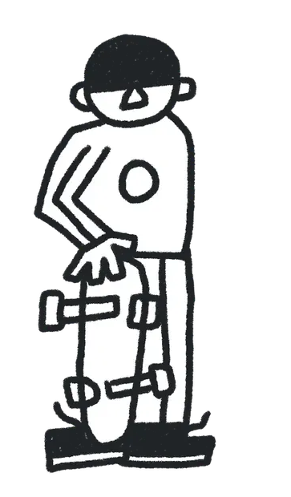
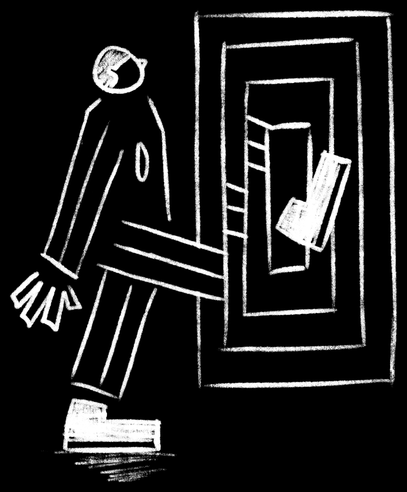

Product Designer with over 4 years in digital product and 15 years of experience in graphic and visual design
Who I am
I was born in Colombia and have lived in Madrid since I was nine, so I like to say I’m a Colombian from Carabanchel and Moratalaz.
I studied graphic arts and started out in editorial design. Over time my curiosity pulled me towards the more creative side of projects, and I moved into art direction and graphic design.
After eight years in advertising and marketing, I decided to take on a new adventure: digital product design, UX/UI. There I bring all my previous design experience to interaction design and problem solving.
These days, in the age of AI, I keep learning as much as I can about new processes, tools and technologies, and bringing them into the way I work.
I’m currently looking for work and open to new opportunities. Let’s talk →
-
Work
Editorial Designer
Gráficas 4
March 2010 - November 2012
Layout of projects for major publishers such as Edelvives and Maeva.
-
Work
Visual Designer
NotesRing Services
January 2013 - February 2014 · Madrid
Sole designer: I defined the strategy, conceptualised and produced digital and print projects.
-
Work
Design Lead
Hey AV
March 2014 - September 2022
I led the design team (3 people) on digital and print projects for clients such as IFEMA Madrid, BancaMarch, Óptica Roma, Madrid Destino, Sandevid and Hogar Sí.
-
Training
Interaction Design Program | UX/UI
La Nave Nodriza
November 2021 - June 2022
The leap into digital product: interaction design and UX/UI.
-
Work
Product Designer
Astara Store
October 2022 - February 2024
End-to-end (UX/UI) design of the online vehicle buying experience (automotive) and of Marketplace features and other in-house brands, working closely with product and engineering.
-
Work
Product Designer
CrowdFarming
February 2024 - November 2026
I designed Farmeneur from scratch, a digital cooperative for European farmers (350+ users): concept, UX/UI and visual identity, as the only designer and working with engineering through to implementation. I redesigned the internal payment management and visual asset tools, and contributed to the creation and evolution of the Design System.
-
Next stop
Your team?
Looking for a new professional adventure

I’m currently looking for a professional adventure that lets me keep growing and developing my skills in digital products.
Music
Music keeps me productive and focused.
Here are some of my favourite tracks:
Pull out the record and hit play
-
1979 — The Smashing Pumpkins
-
Nights — Frank Ocean
-
Esperanza — Hermanos Gutiérrez
-
Sin sentimientos — Grupo Niche
-
Weird Fishes / Arpeggi — Radiohead
-
El hombre pájaro — Robe
-
Pain — The War on Drugs
-
Escarcha — Héctor Lavoe
-
Triste y vacía — Héctor Lavoe y Willie Colón
-
One — Metallica
-
Good News — Mac Miller
-
Sin medir distancias — Diomedes Díaz
-
Queen of the Highway — The Doors
-
The Seed (2.0) — The Roots y Cody ChesnuTT
-
El preso — Fruko y sus Tesos
-
Hey — Pixies
-
Snowblind — Black Sabbath
-
Nuthin’ but a “G” Thang — Dr. Dre y Snoop Dogg
-
Under the Bridge — Red Hot Chili Peppers
-
Hard Row — The Black Keys
-
Tighten Up — The Black Keys
-
Hometown Glory — Adele
-
Lágrimas negras — Bebo Valdés y Diego El Cigala
-
Si te vas… — Extremoduro
-
Danny Nedelko — IDLES
-
The Funeral — Band of Horses
-
Old Man — Neil Young
-
Soldier On — The Temper Trap
-
Fake Tales of San Francisco — Arctic Monkeys
-
Everlong — Foo Fighters
Let’s talk!
Open to talking about new projects or just chatting about design.